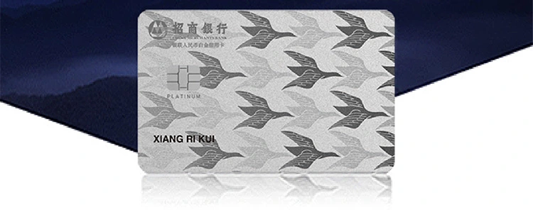
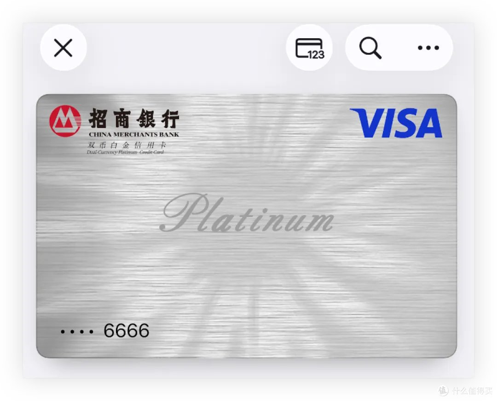

奶昔🥤
@realNyarime
看大家都在说招行万事达借记卡支持Apple Pay，其实有信用卡的也没必要凑这波热度，很早其实那张黑色的Visa就能绑AP了
讲下狗招毕业，自从受邀年费8万的鸟白自由人生，那就顺便下了Visa白金卡。这个比黑色多了境外笔笔1%并且免年费，鸟白的年费可以靠取现（每月免费一次）轻松达标，不喜欢就Visa白下了消掉保白金
不过我司代发是宇宙行，除了奋斗专以外还办了国贸黑白菜也是15笔刷免，不过待遇得等放假出境旅游再顺便测测了，总之信用卡可Dispute但借记卡争议都难

